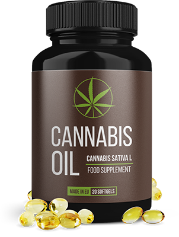

Az antibiotikumokra és a végbélmasszázsra már nincs szükség!
A svájci tudósok áttörést mutattak be a krónikus prosztatagyulladás kezelésében. Most már minden férfi 7 nap alatt megszüntetheti a prosztatagyulladást.
A prosztata- a férfiak második szíve. Sajnos, a negatív tényezők hatására valamint időskorban, 40 év felett, megjelenik a prosztatagyulladás és a prosztata méreteiben megnő. Az Európai Egészségügyi Intézet statisztikái szerint a bakteriális vagy nem fertőző prosztata gyulladások minden 10 férfiből 9-nél valamilyen mértékben jelen vannak.
Hiába ismert és gyakori ez a betegség, még mindig nincs megfelelő és gyors kezelés. A rendelkezésre álló gyógyszereket és a fizioterápiát 50–60 évvel ezelőtt fejlesztették ki. Sajnos, nemcsak egészségtelenek (mivel a kezelés alapja az erős antibiotikumok), hanem hatástalanok is. Gyakran (az esetek több mint 93%) a prosztatagyulladás a kezelés után újra megismétlődik. Éppen ezért, az orvosok többsége azt erősíti, hogy a krónikus prosztatagyulladás gyógyíthatatlan.
De, a svájci doktorok megtalálták azt a módot, amellyel ki lehet gyógyítani a prosztatát és Teljesen megszünteti a prosztatagyulladást! Figyelemre méltó, hogy őseink már régen is ezt a módszert használták. A tudósok csak tovább fejlesztették. Segítségével, a prosztatagyulladást bármelyik szakaszában meg lehet szüntetni, még az adenóma szakaszban is.
Az újságírókkal folytatott találkozón a svájci tudósok felfedezését a híres urológus és andrológus, a több mint 30 éves tapasztalattal rendelkező legmagasabb kategóriájú orvos, Brian Atkins professzor kommentálta

Újságíró: Atkins Úr, kérem, mondja el nekünk miért veszélyes a prosztatagyulladás? Szükséges- e kezelni:
Brian Atkins: A prosztatagyulladást igen is szükséges kezelni. A prosztata, nagyon fontos szerv. Sokban függ a férfi egészsége a prosztata állapotától. A prosztata egész életre fontos funkciót tölt be: prosztata szekréciót állít elő, ellenőrzi a vízeletürítést, megakadályozza a fertőzés behatolását a húgycsőből a felső húgyúti traktusba, prosztaglandint E-t termel, és szabályozza a férfiak pszichoemocionális állapotát. Ezért ennek a szervnek a problémái számos más betegség kialakulásával járhat: impotencia, vese- és húgyhólyaggyulladás, immunitás csökkenése, a tesztoszterontermelés csökkenése és ennek eredményeként a test gyors öregedése, szív- és érrendszeri megbetegedések és depresszió.
Ha nem kezelik, még krónikus prosztatagyulladás esetén sem, vagyis ha nincs akut tünet, akkor a prosztata kóros változásai jelentkeznek, amelyek mindig adenómához, később prosztata rákhoz vezetnek. Amikor ez megtörténik- már csak idő kérdése. Egyeseknél a prosztata szövet kóros degenerációja gyorsan, másoknál lassan megy végbe.
Ezenkívül, a prosztatagyulladás hajlamos tovább súlyosbodni. Minden súlyosbodásnál a tünetek erősebbek és erősebbek lesznek. Melyek ezek a tünetek: a prosztata gyulladása, megnehezült vizeletürítés, fájdalmak a here környéken és a deréktájon, égő fájdalom vizeletürítéskor, gyakori vizeletinger.
A prosztatagyulladás egyáltalán nem egy nem ártalmatlan betegség. A kezelés elkerülésével a férfi szószerint megrövidíti az életét. A betegséget minél hamarabb gyógyítani kell.
Újságíró: A szokásos gyógykezelések miért adnak ilyen alacsony terápiás hatást?
Brian Atkins: A prosztatagyulladás- rendkívül alattomos és rendkívül kitartó betegség. Még nem is olyan régen, így gondolták az orvosok. Ez azzal van kapcsolatban, hogy a mai napra ismert készítmények nem voltak képesek a prosztatagyulladás teljes kigyógyítására. A sok évtizeddel ezelőtt kifejlesztett készítmények 90% -a csak a betegség tüneteinek megszüntetésére irányul, nem pedig az okok megszüntetésére.
Vagyis célja a prosztata gyulladásának enyhítése, a vizelés megkönnyítése és a fájdalom eltávolítása, valamint a patogén mikroflóra leküzdése érdekében, amely a prosztata szekréciójában képződik. Igen, ez egy rövid időre segít. De nagyon bonyolult az összes leküzdése, egészen az utolsóig. Egy bizonyos mennyiség mindig megmarad. És ezért, a prosztatagyulladás az eesetek 93% nem sokkal a kezelés után újra fellép.
Ahhoz, hogy minden kórokozót megöljön, erős antibiotikumra van szükség, de ennek működéséhez a prosztatából ki kell nyomni ezeket a kórokozókat. Erre a célra írták elő a végbélmasszázst, amelyet sok ember nem szeret.
A kezelés bonyolultsága miatt sokak találkoznak minden olyan kellemetlenséggel, amelyet a prosztatamasszázst életükbe hoz. És ez nem helyes, és mint már mondtam, veszélyes. Az új mód prosztatamasszázs nélkül gyógyítja a prosztatagyulladást, és ez a nagy előnye. Ezt itthon egyedül is lehet használni.
Újságíró: Kérem mondja el, miből is áll a svájci tudósok felfedezése?
Brian Atkins: Ők a módszert fedezték fel, amely nem csak a prosztata gyulladás tüneteinek kiküszöbölését teszi lehetővé, hanem, ami még fontosabb, annak okait. Igyekszem egyszerűbben elmagyarázni. Nézzük, mitől is jön létre a prosztatagyulladás? Miért van az, hogy fiatalkorban a megbetegedések egyediek, és a 40 év feletti emberek közül bizonyos mértékben szinte mindenki rendelkezik?
Lényegében, ez már régen ismert. A stagnálás és a baktériumok fejlődésének oka a prosztata vérellátásának romlása. Az igazság az, hogy ez a szerv szó szerint kis kapillárisok hálójával van körülvéve. Az életkorral ezek a kapillárisok eldugulnak koleszterinnel, a kapilláris hálózat pedig szegényebbé válik. Ennek eredményeként a prosztata vérellátása és táplálása romlik. És ez a szerv nagyon érzékeny erre, mivel sok különböző funkciót lát el, és nagy mennyiségű tápanyagot igényel. Ennek eredményeként a nem megfelelő vérellátás miatt a prosztata nem működik megfelelően, ami stagnálást eredményez. Ezen túlmenően a mirigy immunitása csökken, és már nem képes megbirkózni a lavina szerűen szaporodó patogén mikroorganizmusokkal.
A prosztata fejlett vérellátási rendszere
Mik az érdemük a svájci tudósoknak? Találtak egy módszert a prosztata kapilláris hálózatának javítására és a mirigy normál vérellátásának helyreállítására. A tudósok megállapították, hogy a koleszterin lerakódások az erek ezen részében 1: 3: 10 arányban elpusztítják az omega telítetlen zsírsavakat (Omega-3, Omega-6, Omega-9). Ezen kívül a tudósok olyan növényt találtak, amelyben ezek a savak a megfelelő arányban vannak jelen. Kiderült, hogy olyan növény, mint a kannabisz, vagy inkább nem maga a növény, hanem magjai. Lényegében, a kannabisz magva- ez az egyedüli természetes termék, amelyben az Omega telítetlen zsírsavak a megfelelő arányban vannak.
A tudósok a kannabisz magvából magas koncentrációjú olajat kaptak és a Genfi urológiai főiskolán végezték el a klinikai vizsgálatokat. A vizsgálatokban összesen 500 önkéntes, krónikus prosztata megbetegedéssel küzdő, vett részt. Szeretném a vizsgálatok eredményét megmutatni Önnek, ezek egyszerűen hihetetlenek!
A vizsgálatok eredményei:
- Teljes kigyógyulás - az alanyok 96%
- A gyulladás elmúlt, a vizeletürítés normalizálódott- az alanyok -100%
- A tesztoszteron szintjének emelkedése- 87%
- Helyreállt az egészséges potencia- 91%
- Elmúlt a gát illetve a vizeletürítés közbeni fájdalom- az alanyok 99%
- Hozzászokás és a mellékhatások hiánya- az alanyok 100%
Amint látja, a prosztatagyulladásból kigyógyultaknak százalék aránya nagyon magas. Ha összehasonlítjuk a tradicionális kezeléssel, akkor a CBD segítségével történő kezelés 17-szer hatékonyabb. És eközben, maga az olaj- teljesen természetes alapanyag, és ezért nem hogy káros lenne a szervezetre, hanem gyógyítja is. Tisztítja a véredényeket. Ez egy valódi áttörés a prosztatagyulladás kezelésében és a potencia helyreállításában.
Újságíró: Kapható lesz-e a CBD magas koncentrációjú olaj kapszulákban az európai gyógyszertárakban? Mikor jelenik meg és mennyibe fog kerülni?
Brian Atkins: A gyártó bejelentése szerint, a szállítása az európai gyógyszertárakba, beleértve a mi országunkat is, 2022-től nem kezdődik el korábban. Ez azzal van összefüggésben, hogy a kannabisz olaj eléggé hiány termék. Ma kendermezők, amelyből az olaj készül, Európában praktikusan, egyáltalán nincsenek.

Most ( és én úgy gondolom, hogy ez még egy néhány évig így is marad) a -t csak a gyártó hivatalos honlapján lehet megrendelni .
Az árral kapcsolatosan... Perpillanat, ez a minimális ár, mert a magas koncentrációjú kannabisz olajat a gyártóárúsítja, minden közvetítő nélkül. És ezért, a prosztatagyulladás kezelésének adott módja mindenki számára elérhető. Magát az olajat orvosi recept nélkül is lehet szedni.
Egyvalami van, amire emlékezni kell- a kannabisz olajat tartalmazó kapszulákat csak korlátozott mennyiségben bocsátották eladásra, a kérelmek száma minden nap csak több és több, mértani sorozatként növekszik, mivel egyre több férfi hall a csodálatos tulajdonságairól. Ezért én azt javasolnám, hogy mindenki hagyjon kérelmet az olaj megvásárlására, minél előbb annál jobb, ameddig készleten van.
Figyelem:
- A kannabisz olaj megszünteti a prosztatagyulladást.
- Az első kezelés után már erősíti a szexuális vágyat.
- Normalizálja a vizeletürítést.
- Helyreállítja a természetes potenciát.
- Emeli az élet tónust.
AZ OLVASÓK EREDMÉNYEI
"Csodás készítmény. Több mint 10 évig küszködtem a prosztatagyulladással. Nem tudtam normálisan aludni sem- folyamatosan a WC-re szaladgáltam. A szexről egyáltalán szó sem volt- olyan fájdalmaim voltak, hogy tűrni nem bírtam. Szenvedtem én is és a feleségem is.
Rengeteg készítményt kipróbáltam, de a kannabisz olaj minden elvárásomat felülmúlta. Nemcsak a fájdalmak és a vizeletürítési problémák múltak el, de visszatért az ellenkező nemhez való húzódás, amelyik a korral lassan elmúlóban volt. Ez a készítmény megmentette az egészségemet és ezzel együtt a személyes életemet is! Mindenkinek ajánlom!"
Kovács Márton
63 éves
"A kezelőorvosom ajánlatára úgy döntöttem, hogy kipróbálom a -t minden remény nélkül, mivel is már lemondtam arról, hogy hatékony készítményt találok a prosztatagyulladásra.
De, meglepetésemre és nagy örömömre azonban egy héttel a kurzus kezdete után jelentős javulást éreztem - a fájdalom és a gyulladás eltűnt. A kurzus végére helyreállt a potencia, és nem is emlékeztem a fájdalmakra és kellemetlenségekre. Egyszerűen egy csodás készítmény."
Nagy János
69 éves
K.József
Köszönet. Érdekes. Megrendeletem az olajat. Nagyon ráuntam a prosztatagyulladásomra!
P. Lukács
Szintén megrendeltem. Más más helyen is hallottam, hogy a nagyon jól segít a prosztatagyulladás és az impotencia ellen. Nem tudtam, hogy hol kapható. Köszönet a hivatkozásért.
K.Bálint
Én egyike vagyok azoknak, akinek sikerült kipróbálnia. Jól segített. A WC-re már nem szaladgálok annyit. A fájdalmak is elmúltak. A potenciám is a régi. Minden megtetszett. Éz mindez antibiotikum és masszázs nélkül.
N. Miklós
Támogatom! Kitünő készítmény. évekig gyógyítottam a prosztatagyulladásomat, eredmény nélkül. Amint elkezdtem az olajat szedni, a prosztatagyulladás 1,5 héten belül elmúlt. Mindenkinek ajánlom!
B. Mátyás
Szintén megrendeltem. Ki kell próbálni. Már belefáradtam a prosztatagyulladás kezelésébe.
K.Dávid
Krónikus prosztatagyulladásban szenvedek 38 éves koromtól. Most 41 éves vagyok. Ez alatt az idő alatt kétszer kezeltem, amikor erős fájdalmaim voltak. Második alkalommal éppen hogy megmentettek az orvosok. Azt mondták, hogy már nem sok kellett, hogy a prosztatagyulladás rákká váljon. Ezért, mindenkinek ajánlom, aki prosztatagyulladástól szenved, minél hamarabb próbáljon megszabadulni tőle. Ez nagyon veszélyes betegség
H.Erik
Elolvastam a megadott honlapon hogy mit írnak az olajról. Fantasztikus! Kérelmet hagytam.
J.Jenő
Megrendeltem, 68 éves vagyok. Prosztatagyulladásom már 3 éve, hogy meg van. Kockázat van, hogy adenóma lesz belőle. A múlt hónapban voltam az elektromos prosztatamasszázs- az ellenségemnek sem kívánom, 2 hetes kezelésen vettem részt, és semmi eredmény.
K.Éva
Meg kell rendelnem a férjemnek. Már 5 éve szenved a prosztatagyulladástól. Potencia teljesen 0. Még csak 61 éves
Cs.Károly
Köszönet!
H. Béla
A készítmény kitünő!!! A prosztatagyulladásom szünőben van!! Mindenkinek ajánlom, ha még elérhető. Jól érzem magam, minden tünet egy néhány napon belül elmúlt. Ilyen jól semmi sem segített.
Sz. Oszkár
A - a legjobb készítmény! Én kb. 3 hónapig szedtem. A prosztatagyulladás teljesen megszünt! Ezelőtt volt egynéhány év, miatta rosszul állt, és nagyon hamar elmentem. Most minden normalizálódott!
G.Róbert
Sikerült megrendelnem
I. Imre
Három napja szedem. Már most jobban érzem magam. Köszönet!
A magas koncentrációjú kannabisz olajat a potencia erősítésére a gyártó hivatalos oldalán lehet
© Copyright. All Rights reserved.